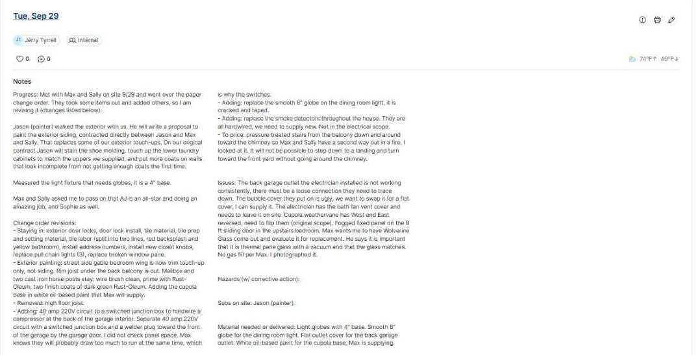
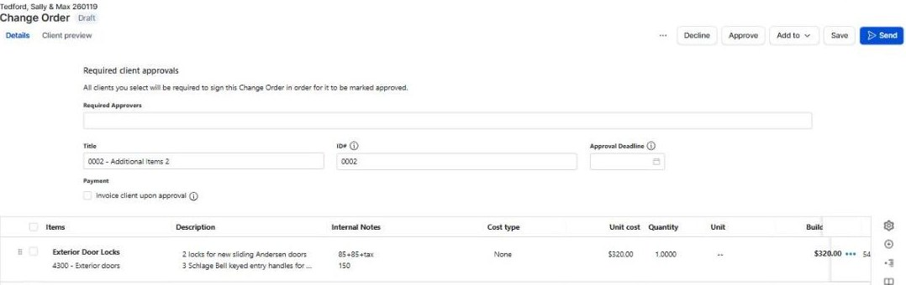
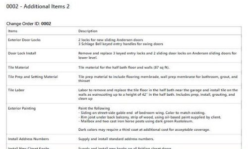
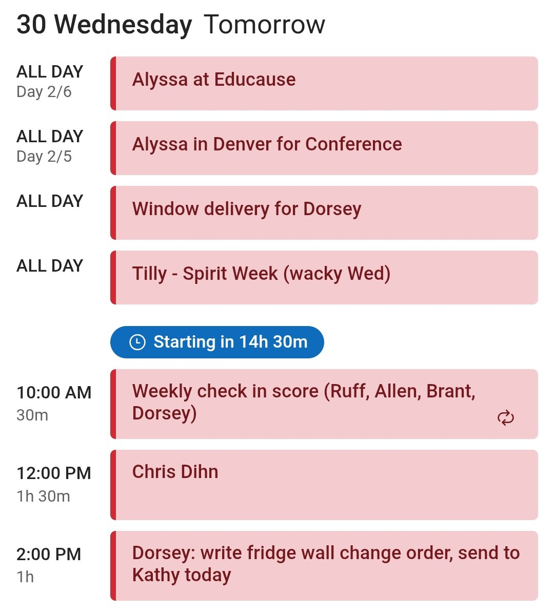
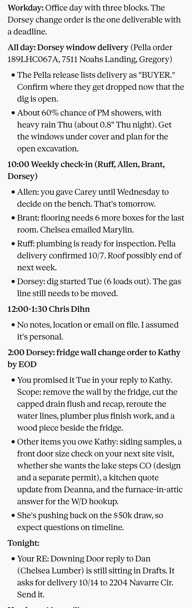

What I hand it, what it can read on its own, and what comes out the other end. Everything on this page is from real jobs in the last two weeks.
Jerry Tyrrell, Project Manager
Claude sits between the systems we already use. I hand it a voice note, it reads what it needs, and it writes back into those same systems.
It can't hear my voice notes or see my photos on its own. I give it those in chat. Voice-to-text on the phone makes that a thirty second job.
This is the part that changed how I work. I talk for a minute after leaving a site and the record keeping happens without me typing any of it.
Short, in my voice, answers her questions in order, commits to end of day tomorrow. Drafted for me to read.
Progress, issues, subs, materials, on our template. Posted, not drafted.
"Dorsey: write fridge wall change order, send to Kathy today," with the scope in the description.
Nothing to order yet, so it lands as an open item in tomorrow's brief instead of the tracker.
Rambling is fine. It sorts out what goes where.
Tan boxes are what I typed or said. Everything else is Claude's work. Screenshots are real; the prompts are retyped from what I actually said, since voice notes don't leave a transcript worth reading.





| Category | Job Name/PO# | Company | Item | Approved | Order Date | Ship Date | Date Delivered |
|---|---|---|---|---|---|---|---|
| Exterior Doors | Downing | Chelsea Lumber | ThermaTru Smooth Star Echo 4 lite entry | x | 9/15/2026 | 10/14 (requested) | |
| Windows | Dorsey | Pella | Order 189LHC067A | x | 9/30/2026 | ||
| Plumbing | Allen | Ferguson | Seachrome shower bench SHAF-185155-W | x | 9/29/2026 | ||
| Trim | Brant | Chelsea Lumber | Windsor casing, poplar crown and parting stop | x | 9/28/2026 | Pickup Tue |
Highlighted cells are the ones it filled from email. Table reconstructed from the tracker for this page.
Not everything, but the parts of the day that used to be typing and searching.
Sometimes I have to explain myself a second time, a job name or a detail it got wrong. It's fast enough by voice that it's worth it.
BuilderTrend has no API, so daily logs and change orders go in through the browser. Slower than email or calendar, but it works.
Read every client email before it sends. Price the change orders. Make the calls to clients who don't email. Decide what goes in the proposal.
How I write. Who our vendors are and how orders go to them. That Max Tedford only takes phone calls. That the Wednesday 10:00 check-in is a reminder, not a real block. It gets more useful the longer you use it.
Start with one thing. The daily log is the easiest win.
Email and calendar are where most of the value is, and it's a one-time connection in Claude's settings. Carpenters and runners don't have company email, so this part is for PMs and coordinators.
Your role, which jobs are yours, how you like to write. Paste in three of your own sent emails and say "write like this."
Use the microphone on your phone. Ramble. Say the job name. It sorts the rest out.
Anything to a client, read it first. Internal notes and logs you'll trust pretty quickly.
Once a few logs are in, ask "where are we at on the Smith job?" That's when it clicks.
I'll sit with anyone who wants to set this up. Half an hour is enough to get the first log posted.